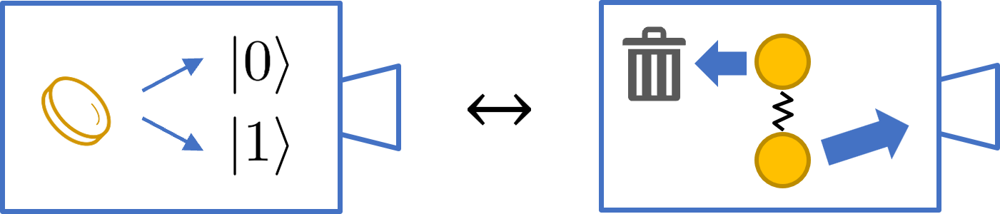
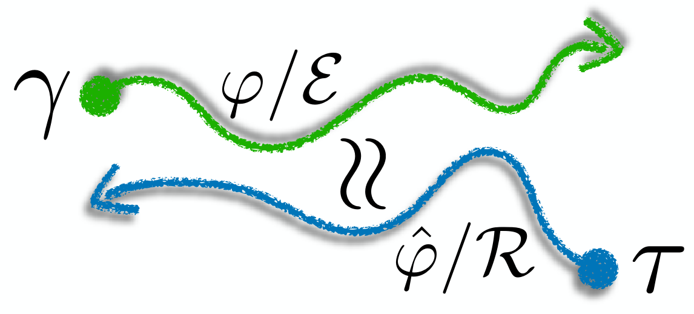
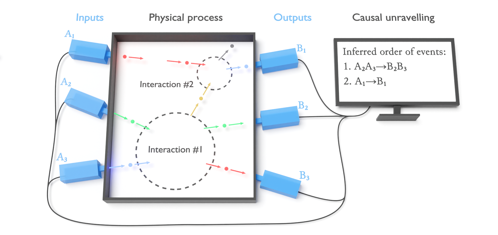
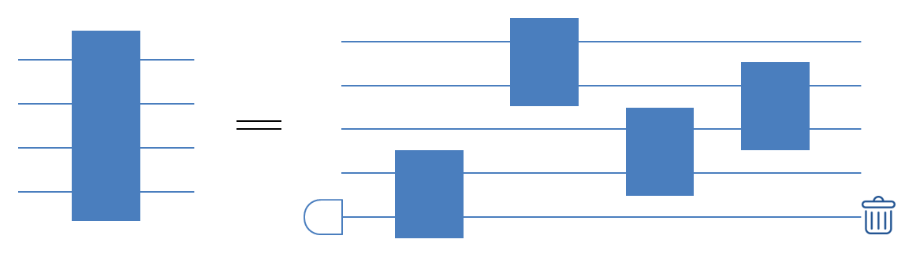

Proper and improper mixed states serve as different prior beliefs for quantum state retrodiction
Mingxuan Liu, Valerio Scarani, Ge Bai
Researcher in quantum information
I'm now recruiting PhD students, Master students, Research Assistants, Interns, Postdocs at Hong Kong University of Science and Technology (Guangzhou). Students and researchers with a solid mathematics and physics background and a strong interest in quantum information are welcome to join our research group to conduct research in quantum information at AI Thrust, Information Hub, HKUST(GZ).
If you are interested, please send me an email (baige dot research at gmail dot com) with CV, transcript, research experience, and the reason of your application such as your interests. For PhD and Postdoc applications, please also attach a research plan.
Ge Bai joined AI Thrust, Information Hub, Hong Kong University of Science and Technology (Guangzhou) in March 2025 as an assistant professor. His research aims to improve the efficiency and reduce the noise of quantum communication, computation and learning, covering topics of quantum causal inference, quantum machine learning, quantum communication network theory, quantum benchmarking, quantum error correction, quantum information theory, etc. Before joining HKUST(GZ), he worked as a postdoctoral fellow at the Centre for Quantum Technologies in the National University of Singapore. He received his Ph.D. from the University of Hong Kong in 2021 and was awarded the Hong Kong Institution of Science Young Scientist Award. His undergraduate study was in Yao Class, Institute for Interdisciplinary Information Sciences (IIIS), Tsinghua University. He has published nearly 20 papers in top journals in the field of quantum information such as Physical Review Letters, Nature Communications, IEEE Transactions on Information Theory, npj Quantum Information, Quantum, and has made many oral reports at conferences such as AQIS and Quantum Resources. He is a PC member of AQIS, a reviewer for many top journals and conferences such as Physical Review Letters, QIP, and AQIS.
Mingxuan Liu, Valerio Scarani, Ge Bai

A mixed state can represent unspecified ignorance, lack of knowledge of a pure state ("proper mixture"), or discarded entanglement ("improper mixture") — views that yield identical density matrices and identical predictions for future measurements. We show that as prior beliefs for retrodiction (inferring the past from later observations), they lead to different updated beliefs, a purely quantum feature of Bayesian agency. We establish a framework for retrodicting on any quantum belief, prove a necessary and sufficient condition for the equivalence of beliefs, and demonstrate operational consequences in quantum state recovery.
Ge Bai, Francesco Buscemi, Valerio Scarani

Classically, Bayes' rule can be derived from a principle of minimum change: updated beliefs must be consistent with new data while deviating minimally from the prior. We introduce a quantum analog of this principle, minimizing the change between two quantum input-output processes rather than just their marginals. When the change maximizes the fidelity, the principle has a unique solution, and the resulting quantum Bayes' rule recovers the Petz transpose map in many cases.
Ge Bai, Ya-Dong Wu, Yan Zhu, Masahito Hayashi, Giulio Chiribella

Complex processes often arise from sequences of simpler interactions involving a few particles at a time. These interactions, however, may not be directly accessible to experiments. Here we develop the first efficient method for unravelling the causal structure of the interactions in a multipartite quantum process, useful for identifying useful communication channels in quantum networks, and to test the internal structure of uncharacterized quantum circuits.
Ge Bai, Iman Marvian

We develop efficient methods to synthesize energy-conserving unitaries from basic interactions such as XX+YY interaction, showing that generic energy-conserving unitaries like CCZ and Fredkin gates can be implemented with 1 or 2 ancilla qubits depending on the gate set. Our approach supports exact and approximate synthesis, with applications in quantum computing, thermodynamics, and quantum clocks.
Ge Bai, Giulio Chiribella
Quantum benchmarks are widely used for validating quantum information processing, but practical tests often use finite subsets of input states, leading to artificially higher benchmarks. We demonstrate a setup using one fixed entanglement source to indirectly probe the average fidelity of many states, rigorously validating various protocols.